Review format v2 · Six source pages · Original parser predictions · Physical PDF page numbers. Values are not repaired. See REPORT.md for pipeline setups, runtime and metric definitions.
18/18 document/parser exports loaded, including all six MinerU VLM results. Text and tables are embedded in this HTML; only images use adjacent files. This review shows one checked page per document. Links below each parser heading open its full output.
| Pipeline | Completed exports | Pages with extracted text |
|---|---|---|
| MinerU OCR | 6 | 140/140 |
| MinerU local VLM | 6 | 140/140 |
| PyMuPDF4LLM — no OCR | 6 | 88/140 |
Order: Source → MinerU OCR → MinerU VLM → PyMuPDF4LLM. On narrower windows, panels wrap onto more rows; each long panel scrolls independently. An image-only PyMuPDF result has no OCR transcription.
Jump to this page’s VLM result
Source checks: Total Revenues: $98.9, $91.2; GAAP Earnings per Share: $0.80, $1.41; Cash Flow from Operations: $1.9, $3.1
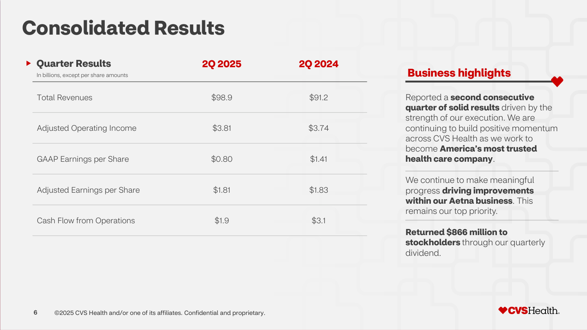
Full Markdown · Page JSON · Run settings
789 transcribed characters; 1 HTML tables.
| Quarter Results In billions, except per share amounts | 2Q 2025 | 2Q 2024 |
| Total Revenues | $98.9 | $91.2 |
| Adjusted Operating Income | $3.81 | $3.74 |
| GAAP Earnings per Share | $0.80 | $1.41 |
| Adjusted Earnings per Share | $1.81 | $1.83 |
| Cash Flow from Operations | $1.9 | $3.1 |
Reported a second consecutive quarter of solid results driven by the strength of our execution. We are continuing to build positive momentum across CVS Health as we work to become America's most trusted health care company.
We continue to make meaningful progress driving improvements within our Aetna business. This remains our top priority.
Returned $866 million to stockholders through our quarterly dividend.
6
©2025 CVS Health and/or one of its affiliates. Confidential and proprietary.
CVSHealth
Full Markdown · Page JSON · Run settings
793 transcribed characters; 1 HTML tables.
▶ Quarter Results 2Q 2025 2Q 2024
| In billions, except per share amounts | ||
| Total Revenues | $98.9 | $91.2 |
| Adjusted Operating Income | $3.81 | $3.74 |
| GAAP Earnings per Share | $0.80 | $1.41 |
| Adjusted Earnings per Share | $1.81 | $1.83 |
| Cash Flow from Operations | $1.9 | $3.1 |
Reported a second consecutive quarter of solid results driven by the strength of our execution. We are continuing to build positive momentum across CVS Health as we work to become America's most trusted health care company.
We continue to make meaningful progress driving improvements within our Aetna business. This remains our top priority.
Returned $866 million to stockholders through our quarterly dividend.
6
©2025 CVS Health and/or one of its affiliates. Confidential and proprietary.
♥CVSHealth®
Full Markdown · Page JSON · Run settings
761 transcribed characters; 0 HTML tables.
Quarter Results In billions, except per share amounts
2Q 2025
2Q 2024
Reported a second consecutive quarter of solid results driven by the strength of our execution. We are continuing to build positive momentum across CVS Health as we work to become America’s most trusted health care company .
We continue to make meaningful progress driving improvements within our Aetna business . This remains our top priority.
Returned $866 million to stockholders through our quarterly dividend.
Total Revenues $98.9 $91.2
Adjusted Operating Income $3.81 $3.74
GAAP Earnings per Share $0.80 $1.41
Adjusted Earnings per Share $1.81 $1.83
Cash Flow from Operations $1.9 $3.1
6 ©2025 CVS Health and/or one of its affiliates. Confidential and proprietary.
Jump to this page’s VLM result
Source checks: Total revenue: 3,037.1, 8,674.9, 1,693.1, 126.6, 13,531.6; EBITDA: 174.9, 192.7, (84.6), 10.4, 293.4; EBIT: 164.2, 150.1, (92.0), 6.4, 228.7
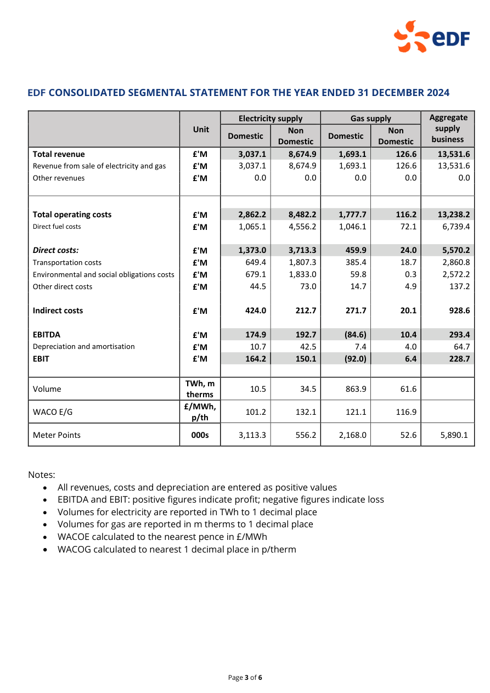
Full Markdown · Page JSON · Run settings
1,414 transcribed characters; 1 HTML tables.
EDF CONSOLIDATED SEGMENTAL STATEMENT FOR THE YEAR ENDED 31 DECEMBER 2024
| Unit | Electricity supply | Gas supply | Aggregatesupplybusiness | |||
| Domestic | NonDomestic | Domestic | NonDomestic | |||
| Total revenueRevenue from sale of electricity and gasOther revenues | £'M£'M£'M | 3,037.1 | 8,674.9 | 1,693.1 | 126.6 | 13,531.6 |
| 3,037.10.0 | 8,674.90.0 | 1,693.10.0 | 126.60.0 | 13,531.60.0 | ||
| Total operating costsDirect fuel costsDirect costs:Transportation costsEnvironmental and social obligations costsOther direct costsIndirect costsEBITDADepreciation and amortisationEBIT | £'M£'M£'M£'M£'M£'M£'M£'M£'M£'M | |||||
| 2,862.2 | 8,482.2 | 1,777.7 | 116.2 | 13,238.2 | ||
| 1,065.1 | 4,556.2 | 1,046.1 | 72.1 | 6,739.4 | ||
| 1,373.0 | 3,713.3 | 459.9 | 24.0 | 5,570.2 | ||
| 649.4 | 1,807.3 | 385.4 | 18.7 | 2,860.8 | ||
| 679.1 | 1,833.0 | 59.8 | 0.3 | 2,572.2 | ||
| 44.5424.0 | 73.0212.7 | 14.7271.7 | 4.920.1 | 137.2928.6 | ||
| 174.9 | 192.7 | (84.6) | 10.4 | 293.4 | ||
| 10.7 | 42.5 | 7.4 | 4.0 | 64.7 | ||
| 164.2 | 150.1 | (92.0) | 6.4 | 228.7 | ||
| Volume | TWh, mtherms | 10.5 | 34.5 | 863.9 | 61.6 | |
| WACO E/G | £/MWh,p/th | 101.2 | 132.1 | 121.1 | 116.9 | |
| Meter Points | 000s | 3,113.3 | 556.2 | 2,168.0 | 52.6 | 5,890.1 |
• All revenues, costs and depreciation are entered as positive values
• EBITDA and EBIT: positive figures indicate profit; negative figures indicate loss
• Volumes for electricity are reported in TWh to 1 decimal place
• Volumes for gas are reported in m therms to 1 decimal place
• WACOE calculated to the nearest pence in £/MWh
• WACOG calculated to nearest 1 decimal place in p/therm
eDF
Page 3 of 6
Full Markdown · Page JSON · Run settings
1,448 transcribed characters; 1 HTML tables.
EDF CONSOLIDATED SEGMENTAL STATEMENT FOR THE YEAR ENDED 31 DECEMBER 2024
| Unit | Electricity supply | Gas supply | Aggregate supply business | |||
| Domestic | Non Domestic | Domestic | Non Domestic | |||
| Total revenue | £'M | 3,037.1 | 8,674.9 | 1,693.1 | 126.6 | 13,531.6 |
| Revenue from sale of electricity and gas | £'M | 3,037.1 | 8,674.9 | 1,693.1 | 126.6 | 13,531.6 |
| Other revenues | £'M | 0.0 | 0.0 | 0.0 | 0.0 | 0.0 |
| Total operating costs | £'M | 2,862.2 | 8,482.2 | 1,777.7 | 116.2 | 13,238.2 |
| Direct fuel costs | £'M | 1,065.1 | 4,556.2 | 1,046.1 | 72.1 | 6,739.4 |
| Direct costs: | £'M | 1,373.0 | 3,713.3 | 459.9 | 24.0 | 5,570.2 |
| Transportation costs | £'M | 649.4 | 1,807.3 | 385.4 | 18.7 | 2,860.8 |
| Environmental and social obligations costs | £'M | 679.1 | 1,833.0 | 59.8 | 0.3 | 2,572.2 |
| Other direct costs | £'M | 44.5 | 73.0 | 14.7 | 4.9 | 137.2 |
| Indirect costs | £'M | 424.0 | 212.7 | 271.7 | 20.1 | 928.6 |
| EBITDA | £'M | 174.9 | 192.7 | (84.6) | 10.4 | 293.4 |
| Depreciation and amortisation | £'M | 10.7 | 42.5 | 7.4 | 4.0 | 64.7 |
| EBIT | £'M | 164.2 | 150.1 | (92.0) | 6.4 | 228.7 |
| Volume | TWh, m therms | 10.5 | 34.5 | 863.9 | 61.6 | |
| WACO E/G | £/MWh, p/th | 101.2 | 132.1 | 121.1 | 116.9 | |
| Meter Points | 000s | 3,113.3 | 556.2 | 2,168.0 | 52.6 | 5,890.1 |
Notes:
• EBITDA and EBIT: positive figures indicate profit; negative figures indicate loss
• Volumes for electricity are reported in TWh to 1 decimal place
• Volumes for gas are reported in m therms to 1 decimal place
• WACOE calculated to the nearest pence in £/MWh
eDF
Page 3 of 6
Full Markdown · Page JSON · Run settings
1,470 transcribed characters; 1 HTML tables.
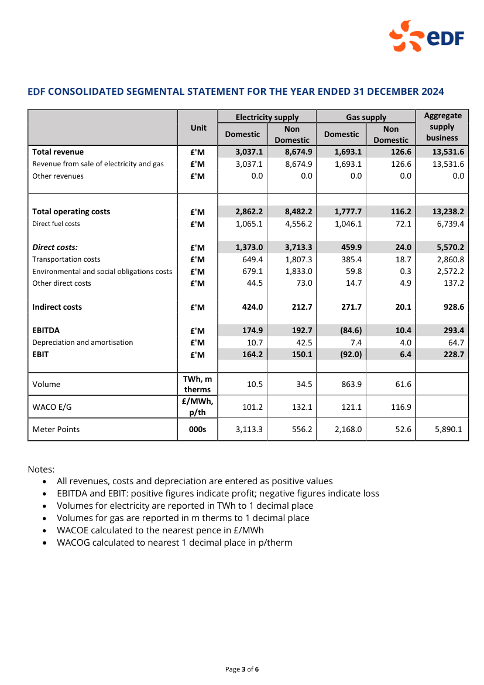
CONSOLIDATED SEGMENTAL STATEMENT FOR THE YEAR ENDED 31 DECEMBER 2024
| Col1 | Unit | Electricity supply | Col4 | Gas supply | Col6 | Aggregate supply business |
|---|---|---|---|---|---|---|
| ** Unit** | Domestic | Non Domestic |
Domestic | Non Domestic |
Non Domestic |
|
| Total revenue Revenue from sale of electricity and gas Other revenues |
£'M £'M £'M |
3,037.1 3,037.1 0.0 |
8,674.9 8,674.9 0.0 |
1,693.1 1,693.1 0.0 |
126.6 126.6 0.0 |
13,531.6 13,531.6 0.0 |
Total operating costs Direct fuel costs Direct costs: Transportation costs Environmental and social obligations costs Other direct costs Indirect costs EBITDA Depreciation and amortisation EBIT |
£'M £'M £'M £'M £'M £'M £'M £'M £'M £'M |
2,862.2 1,065.1 1,373.0 649.4 679.1 44.5 424.0 174.9 10.7 164.2 |
8,482.2 4,556.2 3,713.3 1,807.3 1,833.0 73.0 212.7 192.7 42.5 150.1 |
1,777.7 1,046.1 459.9 385.4 59.8 14.7 271.7 (84.6) 7.4 (92.0) |
116.2 72.1 24.0 18.7 0.3 4.9 20.1 10.4 4.0 6.4 |
13,238.2 6,739.4 5,570.2 2,860.8 2,572.2 137.2 928.6 293.4 64.7 228.7 |
| Volume | TWh, m therms |
10.5 | 34.5 | 863.9 | 61.6 | |
| WACO E/G | £/MWh, p/th |
101.2 | 132.1 | 121.1 | 116.9 | |
| Meter Points | 000s | 3,113.3 | 556.2 | 2,168.0 | 52.6 | 5,890.1 |
Notes:
All revenues, costs and depreciation are entered as positive values
EBITDA and EBIT: positive figures indicate profit; negative figures indicate loss
Volumes for electricity are reported in TWh to 1 decimal place
Volumes for gas are reported in m therms to 1 decimal place
WACOE calculated to the nearest pence in £/MWh
WACOG calculated to nearest 1 decimal place in p/therm
Page 3 of 6
Jump to this page’s VLM result
Source checks: Turnover: 116,787,681, 114,583,476; Gross profit: 67,233,959, 64,913,838; Profit for the financial year: 2,727,857, 12,484,952
Full Markdown · Page JSON · Run settings
620 transcribed characters; 1 HTML tables.
| Notes | 2025 £ | 2024 £ | |
| Turnover | 3 | 116,787,681 | 114,583,476 |
| Cost of sales | (49,553,722) | (49,669,638) | |
| Gross profit | 67,233,959 | 64,913,838 | |
| Administrative expenses | (61,723,344) | (56,732,754) | |
| Operating profit | 6 | 5,510,615 | 8,181,084 |
| Interest receivable and similar income | 8 | 913,167 | 1,000,725 |
| Interest payable and similar expenses | 9 | (2,809,776) | (3,288,591) |
| Other gains and losses | 10 | 169,884 | 8,941,676 |
| Profit before taxation | 3,783,890 | 14,834,894 | |
| Tax on profit | 11 | (1,056,033) | (2,349,942) |
| Profit for the financial year | 2,727,857 | 12,484,952 |
18
Full Markdown · Page JSON · Run settings
620 transcribed characters; 1 HTML tables.
| Notes | 2025£ | 2024£ | |
| Turnover | 3 | 116,787,681 | 114,583,476 |
| Cost of sales | (49,553,722) | (49,669,638) | |
| Gross profit | 67,233,959 | 64,913,838 | |
| Administrative expenses | (61,723,344) | (56,732,754) | |
| Operating profit | 6 | 5,510,615 | 8,181,084 |
| Interest receivable and similar income | 8 | 913,167 | 1,000,725 |
| Interest payable and similar expenses | 9 | (2,809,776) | (3,288,591) |
| Other gains and losses | 10 | 169,884 | 8,941,676 |
| Profit before taxation | 3,783,890 | 14,834,894 | |
| Tax on profit | 11 | (1,056,033) | (2,349,942) |
| Profit for the financial year | 2,727,857 | 12,484,952 |
-18-
Full Markdown · Page JSON · Run settings
No transcribed text. Any image below is a source crop, not OCR output.
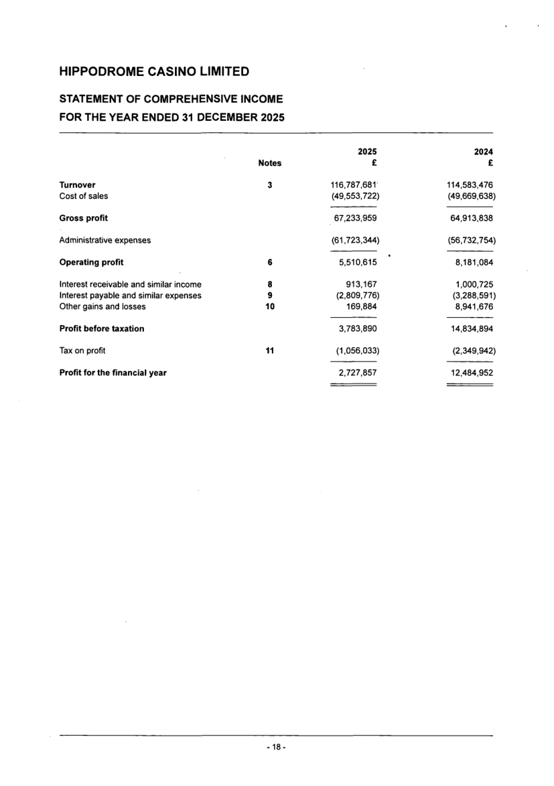
Jump to this page’s VLM result
Source checks: Tangible assets: 967,756, 992,467; Bank and cash balances: 2,751,541, 821,700; Net assets: 4,484,956, 5,194,638
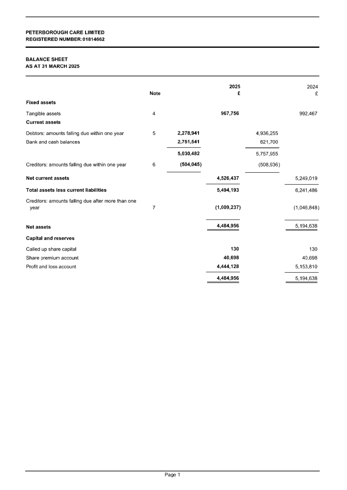
Full Markdown · Page JSON · Run settings
719 transcribed characters; 1 HTML tables.
BALANCE SHEET AS AT 31 MARCH 2025
| Note |
| 2025 £ |
| Fixed assets Tangible assets 4 967,756 |
| Current assets |
| Debtors: amounts falling due within one year 5 2,278,941 4,936,255 |
| Bank and cash balances 2,751,541 821,700 |
| 5,030,482 5,757,955 Creditors: amounts falling due within one year 6 (504,045) (508,936) |
| Net current assets 4,526,437 |
| 5,249,019 |
| Total assets less current liabilities 5,494,193 6,241,486 Creditors: amounts falling due after more than one |
| year 7 (1,009,237) (1,046,848) |
| Net assets 4,484,956 5,194,638 |
| Capital and reserves |
| Called up share capital 130 130 |
| Share premium account 40,698 40,698 |
| Profit and loss account 4,444,128 5,153,810 |
| 4,484,956 5,194,638 |
PETERBOROUGH CARE LIMITED REGISTERED NUMBER:01814662
Page 1
Full Markdown · Page JSON · Run settings
732 transcribed characters; 1 HTML tables.
BALANCE SHEET
AS AT 31 MARCH 2025
| Note | 2025£ | 2024£ | |
| Fixed assets | |||
| Tangible assets | 4 | 967,756 | 992,467 |
| Current assets | |||
| Debtors: amounts falling due within one year | 5 | 2,278,941 | 4,936,255 |
| Bank and cash balances | 2,751,541 | 821,700 | |
| 5,030,482 | 5,757,955 | ||
| Creditors: amounts falling due within one year | 6 | (504,045) | (508,936) |
| Net current assets | 4,526,437 | 5,249,019 | |
| Total assets less current liabilities | 5,494,193 | 6,241,486 | |
| Creditors: amounts falling due after more than one year | 7 | (1,009,237) | (1,046,848) |
| Net assets | 4,484,956 | 5,194,638 | |
| Capital and reserves | |||
| Called up share capital | 130 | 130 | |
| Share premium account | 40,698 | 40,698 | |
| Profit and loss account | 4,444,128 | 5,153,810 | |
| 4,484,956 | 5,194,638 | ||
PETERBOROUGH CARE LIMITED
REGISTERED NUMBER:01814662
Page 1
Full Markdown · Page JSON · Run settings
No transcribed text. Any image below is a source crop, not OCR output.
Jump to this page’s VLM result
Source checks: Revenue: 11,279, 9,057, 2,310, 26%; Operating profit: 2,534, 1,733, 796, 46%; Free cash flow: 1,964, 1,582, 382
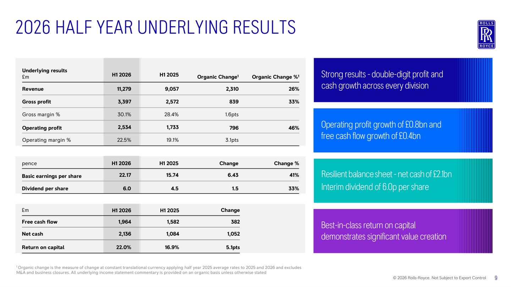
Full Markdown · Page JSON · Run settings
1,150 transcribed characters; 3 HTML tables.
| Underlying results £m | H1 2026 | H1 2025 | Organic Change1 | Organic Change %1 |
| Revenue | 11,279 | 9,057 | 2,310 | 26% |
| Gross profit | 3,397 | 2,572 | 839 | 33% |
| Gross margin % | 30.1% | 28.4% | 1.6pts | |
| Operating profit | 2,534 | 1,733 | 796 | 46% |
| Operating margin % | 22.5% | 19.1% | 3.1pts |
| pence | H1 2026 | H1 2025 | Change | Change % |
| Basic earnings per share | 22.17 | 15.74 | 6.43 | 41% |
| Dividend per share | 6.0 | 4.5 | 1.5 | 33% |
| £m | H1 2026 | H1 2025 | Change |
| Free cash flow | 1,964 | 1,582 | 382 |
| Net cash | 2,136 | 1,084 | 1,052 |
| Return on capital | 22.0% | 16.9% | 5.1pts |
Strong results - double-digit profit and cash growth across every division
Operating profit growth of £0.8bn and free cash flow growth of £0.4bn
Resilient balance sheet -net cash of £2.1bn Interim dividend of 6.0p per share
Best-in-class return on capital demonstrates significant value creation
2026 HALF YEAR UNDERLYING RESULTS
ROLLS R ROYCE
1Organic change is the measure of change at constant translational currency applying half year 2025 average rates to 2025 and 2026 and excludes M&A and business closures. All underlying income statement commentary is provided on an organic basis unless otherwise stated
© 2026 Rolls-Royce. Not Subject to Export Control
g
Full Markdown · Page JSON · Run settings
1,157 transcribed characters; 3 HTML tables.
| Underlying results£m | H1 2026 | H1 2025 | Organic Change1 | Organic Change %1 |
| Revenue | 11,279 | 9,057 | 2,310 | 26% |
| Gross profit | 3,397 | 2,572 | 839 | 33% |
| Gross margin % | 30.1% | 28.4% | 1.6pts | |
| Operating profit | 2,534 | 1,733 | 796 | 46% |
| Operating margin % | 22.5% | 19.1% | 3.1pts |
| pence | H1 2026 | H1 2025 | Change | Change % |
| Basic earnings per share | 22.17 | 15.74 | 6.43 | 41% |
| Dividend per share | 6.0 | 4.5 | 1.5 | 33% |
| £m | H1 2026 | H1 2025 | Change |
| Free cash flow | 1,964 | 1,582 | 382 |
| Net cash | 2,136 | 1,084 | 1,052 |
| Return on capital | 22.0% | 16.9% | 5.1pts |
Strong results - double-digit profit and cash growth across every division
Operating profit growth of £0.8bn and free cash flow growth of £0.4bn
Resilient balance sheet - net cash of £2.1bn Interim dividend of 6.0p per share
Best-in-class return on capital demonstrates significant value creation
ROLLS RR ROYCE
$^{1}$ Organic change is the measure of change at constant translational currency applying half year 2025 average rates to 2025 and 2026 and excludes M&A and business closures. All underlying income statement commentary is provided on an organic basis unless otherwise stated
© 2026 Rolls-Royce. Not Subject to Export Control
9
Full Markdown · Page JSON · Run settings
653 transcribed characters; 0 HTML tables.
2026 HALF YEAR UNDERLYING RESULTS
9
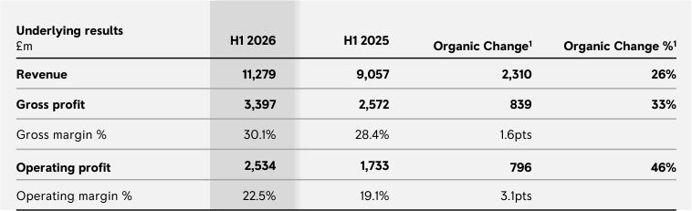
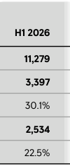
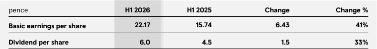
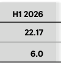
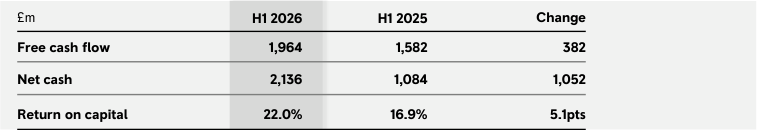
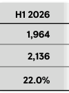
1 Organic change is the measure of change at constant translational currency applying half year 2025 average rates to 2025 and 2026 and excludes M&A and business closures. All underlying income statement commentary is provided on an organic basis unless otherwise stated
Strong results - double-digit profit and cash growth across every division
Operating profit growth of £0.8bn and free cash flow growth of £0.4bn
Resilient balance sheet - net cash of £2.1bn Interim dividend of 6.0p per share
Best-in-class return on capital demonstrates significant value creation
© 2026 Rolls-Royce. Not Subject to Export Control
Jump to this page’s VLM result
Source checks: Revenue: 11,448, 9,490; Cost of sales: (8,021), (6,563); Profit for the period: 1,615, 4,408
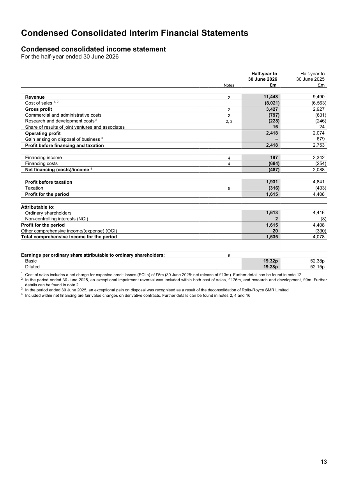
Full Markdown · Page JSON · Run settings
1,709 transcribed characters; 2 HTML tables.
| Half-year to Half-year to30 June 2026 30 June 2025Notes £m £m | ||
| Revenue 2 | 11,448 | 9,490 |
| Cost of sales 1, 2 | (8,021) | (6,563) |
| Gross profit 2 | 3,427 | 2,927 |
| Commercial and administrative costs 2 | (797) | (631) |
| Research and development costs² 2,3 | (228) | (246) |
| Share of results of joint ventures and associates | 16 | 24 |
| Operating profit | 2,418 | 2,074 |
| Gain arising on disposal of business ³ | 679 | |
| Profit before financing and taxation | 2,418 | 2,753 |
| Financing income 4 | 197 | 2,342 |
| Financing costs 4 | (684) | (254) |
| Net financing (costs)/income 4 | (487) | 2,088 |
| Profit before taxation | 1,931 | 4,841 |
| Taxation 5 | (316) | (433) |
| Profit for the period | 1,615 | 4,408 |
| Attributable to: | ||
| Ordinary shareholders | 1,613 | 4,416 |
| Non-controlling interests (NCI) | 2 | (8) |
| Profit for the period | 1,615 | 4,408 |
| Other comprehensive income/(expense) (OCI) | 20 | (330) |
| Total comprehensive income for the period | 1,635 | 4,078 |
| Earnings per ordinary share attributable to ordinary shareholders: | 6 | |
| Basic | 19.32p | 52.38p |
| Diluted | 19.28p | 52.15p |
1 Cost of sales includes a net charge for expected credit losses (ECLs) of £5m (30 June 2025: net release of £13m). Further detail can be found in note 12
2 In the period ended 30 June 2025, an exceptional impairment reversal was included within both cost of sales, £176m, and research and development, £9m. Further details can be found in note 2
3 In the period ended 30 June 2025, an exceptional gain on disposal was recognised as a result of the deconsolidation of Rolls-Royce SMR Limited
4 Included within net financing are fair value changes on derivative contracts. Further details can be found in notes 2, 4 and 16
13
Full Markdown · Page JSON · Run settings
1,733 transcribed characters; 2 HTML tables.
Condensed consolidated income statement
For the half-year ended 30 June 2026
| Notes | Half-year to 30 June 2026 £m | Half-year to 30 June 2025 £m | |
| Revenue | 2 | 11,448 | 9,490 |
| Cost of sales 1,2 | (8,021) | (6,563) | |
| Gross profit | 2 | 3,427 | 2,927 |
| Commercial and administrative costs | 2 | (797) | (631) |
| Research and development costs 2 | 2,3 | (228) | (246) |
| Share of results of joint ventures and associates | 16 | 24 | |
| Operating profit | 2,418 | 2,074 | |
| Gain arising on disposal of business 3 | - | 679 | |
| Profit before financing and taxation | 2,418 | 2,753 | |
| Financing income | 4 | 197 | 2,342 |
| Financing costs | 4 | (684) | (254) |
| Net financing (costs)/income 4 | (487) | 2,088 | |
| Profit before taxation | 1,931 | 4,841 | |
| Taxation | 5 | (316) | (433) |
| Profit for the period | 1,615 | 4,408 | |
| Attributable to: | |||
| Ordinary shareholders | 1,613 | 4,416 | |
| Non-controlling interests (NCI) | 2 | (8) | |
| Profit for the period | 1,615 | 4,408 | |
| Other comprehensive income/(expense) (OCI) | 20 | (330) | |
| Total comprehensive income for the period | 1,635 | 4,078 | |
| Earnings per ordinary share attributable to ordinary shareholders: | 6 | ||
| Basic | 19.32p | 52.38p | |
| Diluted | 19.28p | 52.15p |
$^{1}$ Cost of sales includes a net charge for expected credit losses (ECLs) of £5m (30 June 2025: net release of £13m). Further detail can be found in note 12
$^{2}$ In the period ended 30 June 2025, an exceptional impairment reversal was included within both cost of sales, £176m, and research and development, £9m. Further details can be found in note 2
$^{3}$ In the period ended 30 June 2025, an exceptional gain on disposal was recognised as a result of the deconsolidation of Rolls-Royce SMR Limited
$^{4}$ Included within net financing are fair value changes on derivative contracts. Further details can be found in notes 2, 4 and 16
13
Full Markdown · Page JSON · Run settings
945 transcribed characters; 0 HTML tables.
Condensed consolidated income statement For the half-year ended 30 June 2026
Half-year to Half-year to 30 June 2026 30 June 2025
Notes £m £m
Attributable to:
Earnings per ordinary share attributable to ordinary shareholders: 6 Basic 19.32p 52.38p Diluted 19.28p 52.15p
1 Cost of sales includes a net charge for expected credit losses (ECLs) of £5m (30 June 2025: net release of £13m). Further detail can be found in note 12 2 In the period ended 30 June 2025, an exceptional impairment reversal was included within both cost of sales, £176m, and research and development, £9m. Further details can be found in note 2 3 In the period ended 30 June 2025, an exceptional gain on disposal was recognised as a result of the deconsolidation of Rolls-Royce SMR Limited 4 Included within net financing are fair value changes on derivative contracts. Further details can be found in notes 2, 4 and 16
13
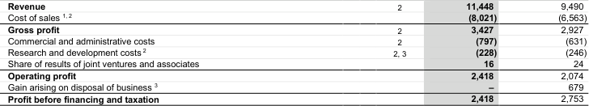
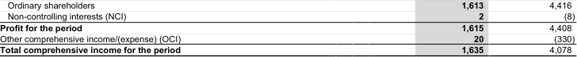